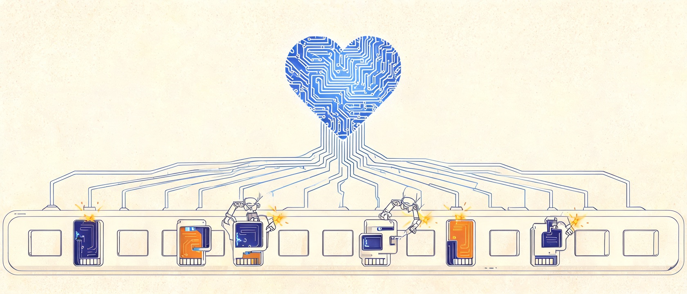
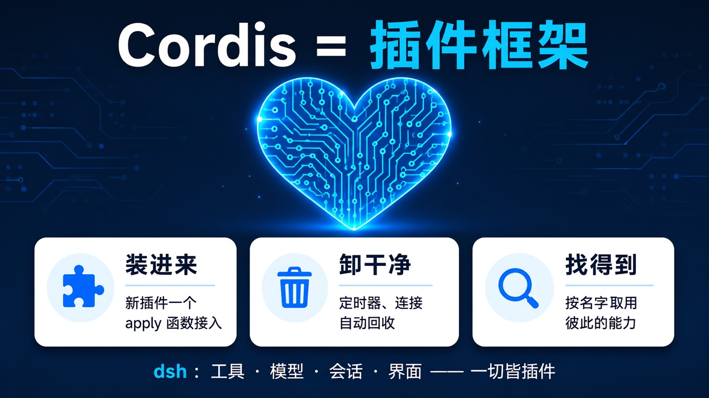
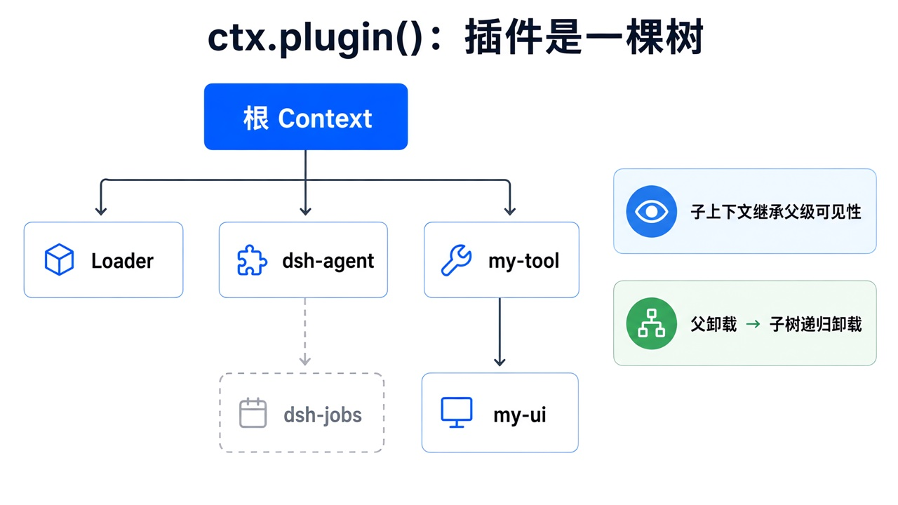
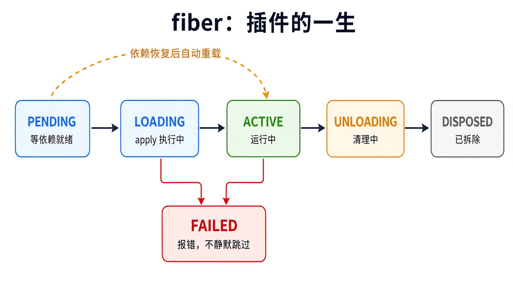
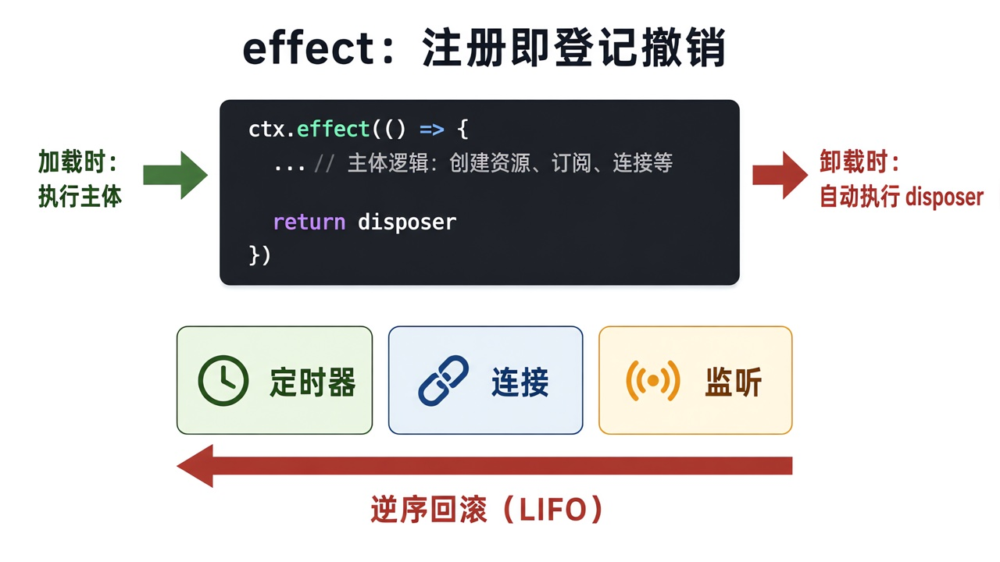
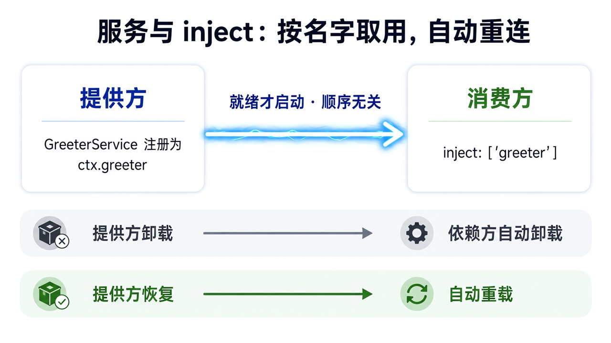
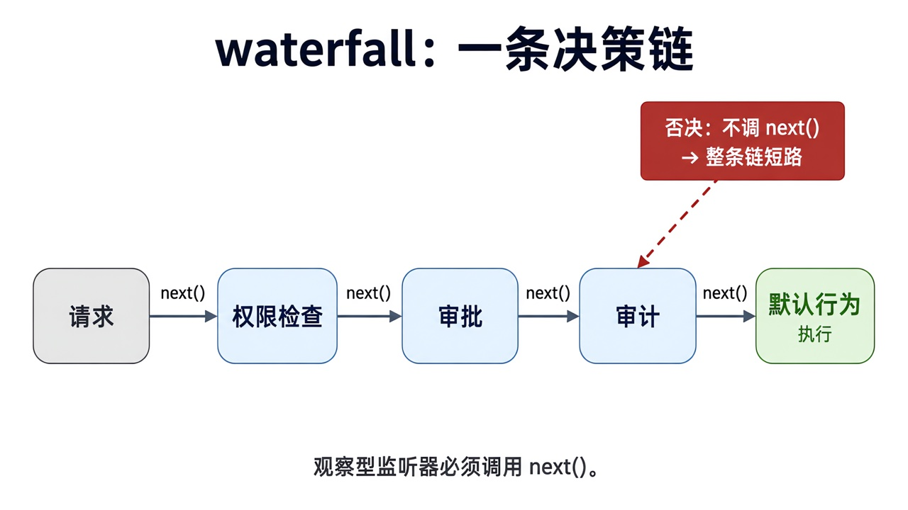
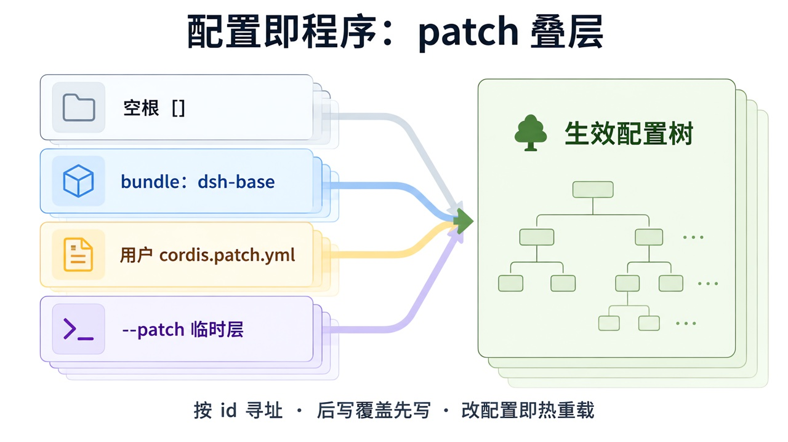

Cordis：dsh 的心脏，与你的第一个插件
DeepSeek Harness（命令行里叫 dsh）是 DeepSeek 开源的 agent 框架，它的口号是「一切皆插件」——工具、模型、会话、沙箱、界面，全部是插件。而管理这成百上千个插件装、卸、互相协作的底座，叫 Cordis。这本手册讲清楚两件事：Cordis 到底是什么，以及怎么亲手写一个 dsh 插件。
Cordis 是什么 —— 一块带总闸的智能插线板
先把术语说清楚，再打比方：Cordis 是一个插件框架。它自己不实现任何业务功能，只回答三件事——插件怎么装进来、插件怎么干净地卸出去、插件之间怎么找到对方。名字来自拉丁语 cor（心）的所有格，意思是「心脏」：它是 Koishi 的心脏，如今也是 dsh 的心脏。
打个比方（比喻跟在定义后面）：Cordis 像一块带总闸的智能插线板。每个插件 = 一个电器：插上就通电（加载）；拔掉时总闸保证不留「暗电流」——定时器、监听器、连接全部自动回收；电器之间互不认识，全都只从插线板取电（服务）。dsh 的每一个工具、模型适配器、UI 面板，都是插在这块板上的电器。
为什么插件系统需要一个框架
假设你写了一个聊天机器人，功能变多后开始拆模块。但「模块化」只解决代码怎么组织，解决不了另外四件事——点击下面的卡片，看 Cordis 分别怎么回答：
这四个问题里，「卸载」和「协作」最难——它们决定了插件能不能安全地动态装卸。Cordis 的特别之处：把这两件事从「插件作者的自觉」上升为「框架级保证」。
出身：从 QQ 机器人到 DeepSeek 的地基
| 时间 | 事件 |
|---|---|
| 2020.01 | Shigma 发布跨平台聊天机器人框架 Koishi，Cordis 是它抽出来的插件内核 |
| 2022.04 | cordis 包独立登上 npm，成为通用插件框架 |
| 2024.11 | Cordis 4 开始预发布：彻底重构，引入基于 fiber 的生命周期体系（第 4 章） |
| 2026 | DeepSeek Harness 以 Cordis 为地基发布（vendor 进仓库）；北大 & DeepSeek-AI 发 88 页论文把它形式化 |

第一个插件：一个文件 + 一行配置
写 Cordis 插件最爽的一点：完全没有框架启动代码。一个导出 apply 函数的文件，加一行配置，就能跑。
// 一个最小的 Cordis / dsh 插件 import type { Context } from '@deepseek-ai/cordis' export const name = 'hello' // 可选：诊断信息里的显示名 export function apply(ctx: Context) { console.log('hello from my first plugin') }
- name: './hello.ts'
跑起来（dsh 自带的小启动器：创建根 Context → 挂载 Loader 插件 → 读取 cordis.yml），输出 hello from my first plugin。注意分工：插件只描述贡献，应用长什么样由配置决定——这叫「配置即组合」。
插件的三种形态
import { Service, type Context } from '@deepseek-ai/cordis' // 1. 函数形态（最常用，没有对外服务时一直用它） export function apply(ctx: Context) {} // 2. 对象形态：带名字的对象 + apply 方法 export const objectPlugin = { name: 'object-plugin', apply(ctx: Context) {}, } // 3. 类形态：要对外提供服务时用（第 6 章） export class MyService extends Service { constructor(ctx: Context) { super(ctx, 'myService') } }
| 形态 | 什么时候用 | dsh 里的例子 |
|---|---|---|
| 函数 | 只做贡献（注册工具 / 监听事件），不对外暴露能力 | 绝大多数 dsh-tool-* |
| 对象 | 同函数，但想要一个显式名字 | 小型内部插件 |
| 类（Service） | 要把一项能力挂到 ctx.<key> 上供别人取用 | ctx.tools、ctx.llm 的提供方 |
ctx 与插件树：一切操作的入口
在 Cordis 里你几乎只跟一个东西打交道：ctx。大白话讲，ctx 是插件进厂时领到的工作台——上面有事件插孔、副作用登记处、子插件挂钩。插件能做的一切，都是往这张工作台上操作。
export function apply(ctx: Context) { ctx.on('some/event', (payload) => {}) // 监听事件（卸载时自动移除） ctx.effect(() => { ... }) // 登记副作用（卸载时自动回滚，第 5 章） ctx.plugin(SomePlugin) // 挂载子插件（随父插件卸载） ctx.get('someService') // 读服务：没有则 undefined（可选依赖探测） ctx.provide('someValue', 42) // 提供服务 }
关键在 ctx.plugin(child)：它不是简单的「注册」，而是派生出一个子上下文。于是插件不是平铺的列表，而是一棵树——子上下文能看到父上下文的一切（继承），但卸载是按层级的：父插件卸载，所有子插件递归卸载；子插件卸载，不影响兄弟和父级。这棵树是 Cordis 一切生命周期语义的骨架。

fiber：插件的一生
先大白话定义：fiber（纤维）是框架给每个已挂载插件实例开的「档案卡 + 生命体征监护仪」。你声明了插件、它加载到哪一步、为什么没动静、卸载到什么程度——全记录在 fiber 上。Cordis 4 为每个插件实例维护一个 fiber，状态机如下：
| 状态 | 大白话 | 技术含义 |
|---|---|---|
| PENDING | 菜没上齐，干等 | 已声明，但 inject 的服务尚未就绪（第 6 章） |
| LOADING | 正在开工 | apply 正在执行 |
| ACTIVE | 正常营业 | apply 完成，贡献已生效 |
| FAILED | 当场翻车 | apply 抛异常，或配置校验失败 |
| UNLOADING → DISPOSED | 退租中 → 已退干净 | disposer 执行中 → 一切已拆除 |

effect：可逆副作用 ——「改配置不用重启」的秘密
先大白话定义：effect = 注册时同时交一张「撤销说明书」。effect 的主体在插件加载时执行；它返回的那个函数（叫 disposer，清理函数）在插件卸载时由框架自动执行。你永远不需要自己调用清理函数——不管插件因为什么原因被卸载。
比喻：像酒店入住时前台就登记好「退房清单」——不管你什么时候走、为什么走（退房、续住换房、被消防疏散），清单上的事项都会被照单执行。
ctx.effect(() => { const conn = createConnection() // 加载时：建立连接 return () => conn.close() // disposer：卸载时如何撤销 })
更关键的事实：Cordis 的内置 API 本身就是 effect——ctx.on() 注册的监听器随插件卸载、ctx.plugin() 的子插件递归卸载、服务注册随提供方消失。论文的实现章节有一个结论：Cordis 中所有对上下文的变更，最终都归结为 ctx.effect 这一个原语；提供服务、挂载插件、注册监听器，全是它的特例。所以「任何通过上下文进行的操作都自动可追踪、可恢复」不是口号，是结构事实。
ctx.effect() 并返回 disposer。做不到的代价就是泄漏：插件卸了，定时器还在跑。
撤销说明按逆序执行（先注册的后撤销，天然 LIFO——后进先出，像摞盘子：最后摞上的最先拿走）。多个 effect 各自独立时，可以只撤掉其中一个而不惊动别人——这就是「单个插件可热卸载，邻居不受影响」的底层依据。

服务与 inject：会自动重连的依赖
先大白话定义：Service（服务）就是把一项能力挂到 ctx 的某个名字上（比如 ctx.tools、ctx.llm），别的插件按名字取用，而不是 import 它的代码。inject 就是声明「我需要哪几个名字」——声明之后，插件会一直保持 PENDING，直到所列服务全部就绪才启动。
import { Service, type Context } from '@deepseek-ai/cordis' // 编译时：声明合并，让 ctx.greeter 在各处都有类型 declare module '@deepseek-ai/cordis' { interface Context { greeter: GreeterService } } export class GreeterService extends Service { constructor(ctx: Context) { super(ctx, 'greeter') // 运行时：以 'greeter' 注册，谁都能 ctx.greeter 拿到 } greet(who: string) { return `Hello, ${who}!` } } export const name = 'greeter' export function apply(ctx: Context) { ctx.plugin(GreeterService) }
export const name = 'consumer' export const inject = ['greeter'] // 声明依赖 export function apply(ctx: Context) { console.log(ctx.greeter.greet('world')) // 此时 greeter 必定就绪 }
cordis.yml 里两行的书写顺序无关紧要：决定插件何时启动的是依赖关系，不是文件顺序。把 greeter 整个删掉？consumer 保持 PENDING，不输出、不崩溃、也不「只运行一半」。
与传统 DI 的本质区别：服务会消失是常态
传统 DI 假设「一旦绑定，服务就一直在」；Cordis 的假设是「服务可以随时出现，也可以随时消失」。这在 Agent 场景里是日常：LLM 提供方被限流、MCP 服务器崩溃导致工具被注销、文件 watcher 被系统杀死。Cordis 的处理：提供方卸载 → 所有依赖它的插件自动卸载（effect 回滚）；提供方恢复 → 自动重载。依赖方一行重连代码都不用写。

服务提供方（点击开关）
提供 llm 服务
提供 tools 注册表
提供 shell 服务
消费方（inject 决定状态）
还有两个配套机制，知道名字即可：ctx.isolate(key, realm) 隔离——让某作用域内一项服务解析到独立实例（每个会话各自的模型 / 沙箱，互不干扰）；ctx.intercept(key, meta) 拦截——外层上下文给依赖访问附加元数据（沙箱策略插件约束所有用 shell 的人），都不用改组件本身。
事件与 waterfall：喊一嗓子，与一条决策链
服务适合「直接打电话」（我知道找谁），但很多时候插件只想喊一嗓子或者拦一下，不关心谁在听——这就是事件。Cordis 的事件是类型化的：事件名和监听器签名靠 TypeScript 声明合并获得全链路类型安全。
declare module '@deepseek-ai/cordis' { interface Events { 'stats/report'(name: string, count: number): void } } ctx.emit('stats/report', 'tool_call', 42) // 发出 ctx.on('stats/report', (name, count) => {}) // 监听（卸载时自动移除）
五种分发模式：事件的「公开契约」
| 模式 | 是否 await | 语义 |
|---|---|---|
emit | 否 | 同步广播；不等待、不收集返回值 |
parallel | 是 | 所有监听器并发执行并一起等待 |
serial | 是 | 按序执行；第一个非空返回值胜出并停止后续 |
bail | 否 | serial 的同步版本 |
waterfall | 否 | 环绕中间件：每个监听器拿到参数和 next()，可包装、可短路 |
waterfall 是 dsh 用得最多的模式，本质是把 Koa / Express 的中间件搬进事件系统：每个监听器收到参数和一个 next()。调用 next() = 放行给下游；不调 next() 直接返回 = 否决，整条链短路。多个互不相识的插件，就这样组成一条决策链。
ctx.on('some/decision', async (input, next) => { if (!hasPermission(input)) return { denied: true } // 不调 next()：否决，短路 return next() // 调 next()：放行 })

配置即程序：cordis.yml、patch 层与 HMR
第 2 章说过「应用长什么样由配置决定」。这一章把这句话推到底：cordis.yml 里的每个条目（entry）不只承载「挂哪个插件」，还承载它的配置、开关和身份——修改配置就是修改应用，而且是热修改。
- id: greeter # 稳定身份：loader 靠它区分「修改」与「删了重加」 name: './greeter.ts' - id: consumer name: './consumer.ts' disabled: true # 保留条目但不挂载；改回后自动加载 config: # 传给 apply 的第二个参数 greeting: 你好
三个要点：① id 是增量更新的前提——不带 id 的条目每次读取都会获得新 id，于是任何编辑都会被当成「先删后加」整体重挂；带 id 才能精准到「只改这一个」。② Schema 校验——插件导出 Config schema（用的正是 Shigma 写的 schemastery），框架在调 apply 前校验，配置非法则加载失败并给出精确到字段的错误，插件绝不会半启动。③ HMR——挂上 cordis-plugin-hmr 后保存文件即触发热重载，而且不需要像 Webpack / Vite 那样手工标注 accept 边界：fiber 本身就界定了组件全部效果的边界，替换一个组件 = 一次 fiber 操作（dispose 旧实例 → effect 全回滚 → 挂载新实例），失败还会整体回退，绝不半重载。
dsh 的做法：应用 = 一层层叠加上去的 patch
dsh 把「配置即程序」工程化成了 Profile + Bundle + patch 覆盖层：一个 Bundle 就是一个 npm 包，其 package.json 声明一份 patch（一组 insert）；核心组合包 @deepseek-ai/dsh-base 的 patch 一次性 insert 几十个核心插件（真实文件约 500 行）；部署方想改默认行为，不用碰任何源码——在自己的 patch 层按 id 覆盖一行即可（后写覆盖先写）。

动手写一个 dsh 插件：三条路线与两个实战
前面的机制全部服务于这一章的实操。先回答「怎么装进去」——三种入口，从最快到最正式：
| 入口 | 怎么用 | 适合 |
|---|---|---|
| ① --patch 覆盖层 | 写个 YAML，dsh web --patch ./my-plugins.yml 启动时插入 | 本地开发，最快见效 |
| ② profile 常驻层 | 把条目写进 $DSH_HOME/profiles/<名字>/cordis.patch.yml | 日常自用，常驻生效 |
| ③ bundle 包 | 打包成 npm 包，package.json 声明 dsh.bundle.patch | 发布给别人 dsh plugin add |
- insert: - id: my-greet-tool name: '/abs/path/to/greet-tool.ts'
实战一：给 Agent 注册一个工具
Agent 的能力边界是 ctx.tools 服务。注册一个工具 = inject 等注册表就绪 + ctx.tools.register()。注册本身是 effect，插件卸载时工具自动注销。
import type { Context } from '@deepseek-ai/cordis' import { defineTool } from '@deepseek-ai/dsh-tools' export const name = 'greet-tool' export const inject = ['tools'] // 等工具注册表就绪（第 6 章） export function apply(ctx: Context) { ctx.tools.register(defineTool({ name: 'greet', description: 'Greet the named person.', parameters: { name: { type: 'string', required: true, description: 'Who to greet' }, }, async execute(args) { return `Hello, ${args.name}!` }, })) }
defineTool 会把 parameters 规约转成给模型看的 JSON Schema，并在 execute 前校验模型给的参数。想观察每一次工具调用？再写一个互相不认识的观察插件——靠事件解耦：
export const name = 'tool-logger' export const inject = ['tools'] export function apply(ctx: Context) { ctx.on('tools/result', (exec, result) => { console.log(`[tool-logger] ${exec.name} -> done`) }) }
实战二：写一个钩子插件（权限门禁）
挂到 tools/pre-execute 这条 waterfall 链上，就有权对每次工具调用说「不」——沙箱、权限、plan-mode 插件用的都是这个扩展点：
import type { Context } from '@deepseek-ai/cordis' import type { PreToolDecision, ToolExecution } from '@deepseek-ai/dsh-tools' export const name = 'permission-gate' export function apply(ctx: Context) { ctx.on('tools/pre-execute', async (exec: ToolExecution, next) => { if (!(await isAllowed(exec))) { return { kind: 'deny', reason: 'Denied by policy.' } // 否决：短路 } return next() // 放行 }) }
槽位：扩展点全部是服务
dsh 的扩展点不是一份「API 列表」，而是一张 Cordis 服务注册表：任何插件都能注册新服务，也能替换已有服务的提供方。每个可替换能力都遵循固定模式（上图）：Definition 只声明契约几乎不变，Provider 可整只替换，Consumer 与 Provider 互不依赖。换提供方 = cordis.yml 改一行，所有依赖方自动卸载重载（第 6 章的模拟器）。
排障三连：插件「没反应」时按序检查
- 查拼写——模块解析失败（路径 / 包名错）只在 logger 报一条，进程不崩（第 2 章）；
- 查 fiber 状态——多半是蹲在 PENDING：inject 的服务无人提供。用
ctx.registry遍历 fiber，或直接让 Agent 调cordis_inspect工具做只读巡检； - 补提供方——把缺的服务提供方加进组合，依赖它的插件会自动激活，无需重启。
展开看参考答案
建一个文件只写一个 apply 函数，在 cordis.yml 里写上文件路径，跑启动器。核心是体会「框架调你」：你没写任何 main 函数，是 Loader 读配置后来调用你的 apply。
导出 apply(ctx: Context)（函数形态），cordis.yml 条目 - name: './hello.ts'。启动器创建根 Context → 挂 Loader → 解析模块 → ctx.plugin() 建 fiber → apply 执行。补充：想改配置可用 config 字段 + 导出 Config schema。
展开看参考答案
照第 9 章实战一抄 greet-tool，用 --patch 塞进 dsh，然后对 Agent 说「用 greet 打个招呼」。工具的 description 和 parameters 就是给模型看的说明书，写得越清楚模型用得越准。
inject: ['tools'] 保证注册表就绪；ctx.tools.register(defineTool({...})) 把工具挂入注册表并附着 disposer。组合里要有 dsh-tools（及它依赖的 systemPrompt 提供方），否则你的插件停在 PENDING。观察 tools/result 事件可另写 observer 插件。
展开看参考答案
照实战二写 permission-gate，把 isAllowed 换成你自己的规则（比如「禁止 rm -rf」）。要点只有一个：想拦截就不调 next() 直接返回 deny；其余情况必须 return next()，否则第 7 章场景 3 的「无声吞掉」就会找上你。
监听 'tools/pre-execute' waterfall，返回类型化决策 PreToolDecision。观察型监听器必须委托 next()；策略监听器在拥有决策权时才可短路。需要单调「最终拒绝」的场合改用 ctx.tools.guard()。
终极测验
五道题覆盖全部核心机制。答完每题立即出解析；4 题以上正确算出师。
参考资料
本手册整理自以下来源：微信文章正文与配图、dsh 仓库官方文档与真实源码（base bundle patch、vendor Cordis）、以及公开的插件开发教程。
- 腾讯技术工程 · 《DeepSeek Harness 背后的"心脏"：Cordis 到底是什么》（作者 lss233，2026-09）——叙事主线参考；本页封面与配图均为 AI 生成，非原文图表
- dsh 官方文档 · Cordis 入门（cordis-primer） 与 Cordis 教程（七章，每个例子可运行）——第 2~7、9 章代码的出处
- dsh 官方文档 · 扩展实操手册（extension-cookbook）——钩子插件与「功能 → 机制映射」表
- 源码 ·
packages/bundle/base/cordis.patch.yml（真实 base bundle，约 500 行）与vendor/cordis/（vendored Cordis 源码）· 仓库 deepseek-ai/deepseek-harness - 论文 · A Programming Paradigm for Spatiotemporal Composability（北大 & DeepSeek-AI，88 页）——effect / coeffect 的形式化
- 上游框架 · cordiverse/cordis · Koishi 生态 koishi.chat
- 社区插件 · awesome-dsh-plugin（GitHub 搜
dsh-plugin话题，2026-08 收录 174 个）
延伸阅读 · 本站相关手册
| 手册 | 关联点 |
|---|---|
| pi 扩展开发 | 另一个 coding agent 的插件体系：pi 用 ExtensionAPI + 事件生命周期，与 Cordis 的「服务 + 可逆副作用」互为对照 |
| pi Agent Loop | dsh 的 agentLoop 服务干的是同一层事：循环驱动本身也是插件 |
| LLM 前缀缓存 | dsh 里 ctx.llm 适配器注册表背后的模型调用层 |